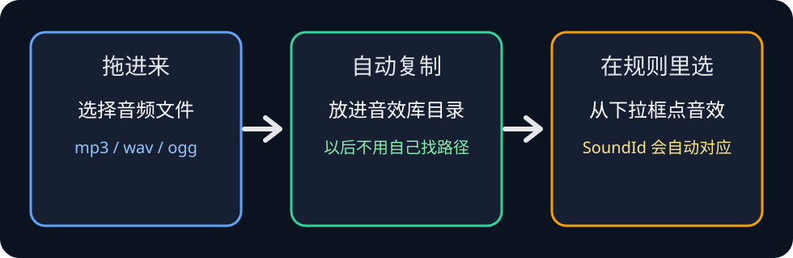
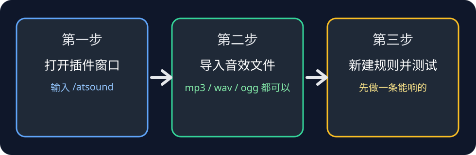
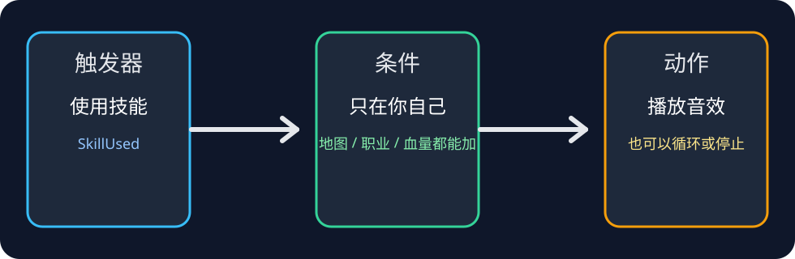
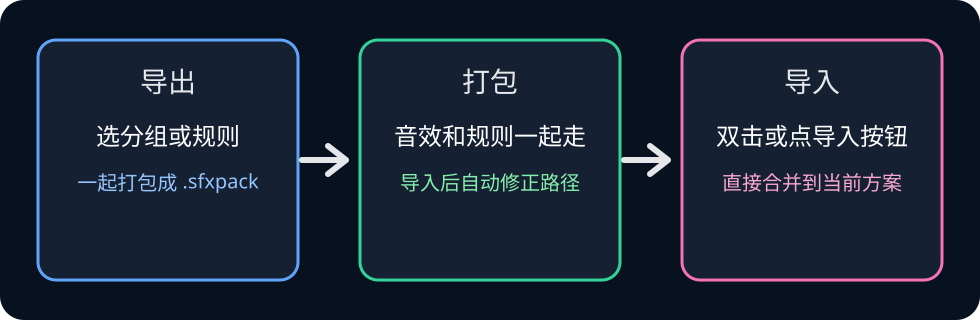

1. 先把音效放进库
打开 音效库 标签页，点 导入音效文件。
一次可以选多个 mp3、wav 或 ogg。

这个页面是插件自己带的，不用去 GitHub，也不用记文件路径。 你只要按首页按钮走：安装社区包、自己做规则，或者去日志里看它有没有命中。
/atsound
首页三大按钮
社区包直接装
做规则走向导
没响看日志
这张图先帮你把路走一遍。你不用一次记住所有按钮，只要知道顺序就行。

打开 音效库 标签页，点 导入音效文件。
一次可以选多个 mp3、wav 或 ogg。

打开 我的音效 标签页，点 新建规则向导。
第一步选什么时候响，第二步填技能名、Buff 名或地图，第三步选择音效，第四步保存到分组。

在 新建规则向导 里选择 获得 Buff 时，然后勾上 Buff 在时循环播放，Buff 消失自动停止。
这样就是 Buff 在的时候循环播，Buff 没了就停，不用你自己手动断开。
到 我的音效 标签页，打开 投稿中心。
选择当前内容、某个分组，或者单条规则，插件会生成 .sfxpack 和 投稿信息.txt。

打开 社区 标签页，点 刷新列表，看到喜欢的音效包后点 安装。
插件会自动下载 .sfxpack，并为这个音效包新建一个分组，不需要你选择位置。
打开 我的音效 标签页里的 投稿中心，选择当前内容、某个分组或单条规则。
只需要填写包名、作者、版本，封面可以不填。作者是必填项，方便审核和展示。插件会自动生成 .sfxpack 和 投稿信息.txt。
先看 日志 标签页，再看音效库里的文件路径是不是还在，最后检查主音量是不是被调得太小。
通常是触发器类型选错了。请把规则的触发器选成 使用技能，不要把技能名写进动作里。
到 音效库 里重新导入，或者把条目改回新的实际路径。导入到库里以后，后面就不用自己记路径了。
可以。这个教程就是本地文件，打开插件窗口里的 查看插件教程 就能看，不需要联网。